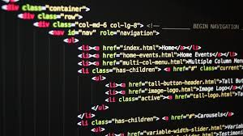

Heading dan Paragrah jadi satu dengan konten artikel singkat mengenai HTML
Apa Sih Html ?
HTML

Hypertext Markup Language (HTML) adalah bahasa markah standar untuk dokumen yang dirancang untuk ditampilkan di peramban internet. Ini dapat dibantu oleh teknologi seperti Cascading Style Sheets (CSS) dan bahasa skrip lainnya seperti JavaScript, VBScript, dan PHP.
Peramban internet menerima dokumen HTML dari server web atau dari penyimpanan lokal dan membuat dokumen menjadi halaman web multimedia. HTML menggambarkan struktur halaman web secara semantik dan isyarat awal yang disertakan untuk penampilan dokumen.
Elemen HTML digambarkan oleh tag, ditulis menggunakan tanda kurung siku. Tag seperti "img" dan "input" langsung perkenalkan konten ke dalam halaman. Tag lain seperti "p" mengelilingi dan memberikan informasi tentang teks dokumen dan mungkin menyertakan tag lain sebagai sub-elemen. Peramban tidak menampilkan tag HTML, tetapi menggunakannya untuk menafsirkan konten halaman.
HTML dapat menyematkan program yang ditulis dalam bahasa skrip seperti JavaScript, yang memengaruhi perilaku dan konten halaman web. Dimasukkannya CSS mendefinisikan tampilan dan tata letak konten. World Wide Web Consortium (W3C), mantan pengelola HTML dan pemelihara standar CSS saat ini, telah mendorong penggunaan CSS pada HTML presentasi eksplisit sejak 1997.